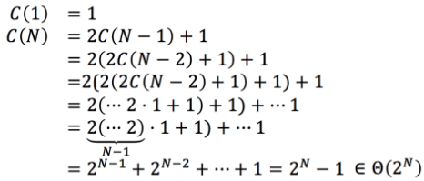
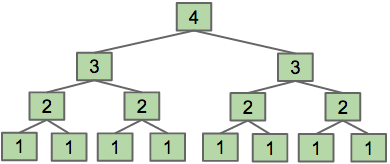

Common program call sequences/sums:
Common methods to solving problems:
For the example program:
public static int func(int N) {if (N <= 1)return 1;return func(N - 1) + func(N - 1);}
- Recursion method: if every time we increase
N by1 the work doubles, this isΘ(2N) runtime- Recurrence method: count the number of calls to a given function (known as a recurrence relation)
- For the code above, let
C(N) be the number of calls for a givenN - Then we have
C(1)=1 andC(N)=2C(N−1)+1≡2C(N−1) - We can solve this algebraically:
- Or (usually easier/faster method) count the number of calls in a figure such as the one below to get the function call sum:
- This gives
C(N)=1+2+4+8+ ...+ 2N−1=Θ(2N)